图标
名称
功能

刷新
对网络扫描执行立即更新。

导出拓扑
对硬盘执行 拓扑导出。
PRONETA Basic 的网络分析可帮助用户快速了解 PROFINET 网络中安装的设备及其彼此互连的方式。“网络分析”(Network Analysis) 还允许用户查看和更改设备的各种网络参数，如 IP 地址、设备名称等。
可以将不同的网络相互比较，并且可以自动或手动组态设备。
在线模式下，PRONETA Basic 将对 PROFINET 网络执行单次扫描或连续扫描以查找当前设备。主画面分为三个部分：
A 图形视图 (1)
A 可访问设备的 (2) 设备表
通过单击 PRONETA Basic 窗口中分隔栏上相应的三角形图标，可以切换设备表和设备详细信息的显示。
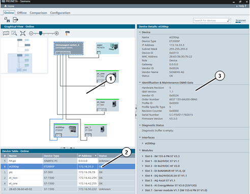
|
注意 |
如果网络规模超过 500 台设备，则在扫描期间可能无法检测到所有设备。在这种情况下 PRONETA Basic 可能会崩溃。 |
功能栏
功能栏中提供以下功能：
|
图标 |
名称 |
功能 |
|
|
刷新 |
对网络扫描执行立即更新。 |
|
|
导出拓扑 |
对硬盘执行 拓扑导出。 |
执行拓扑导出时，可导出各种不同格式：
这有助于：
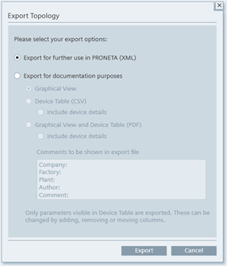
“包括设备详细信息”(Include device details) 选项用于向生成的文件中添加端口组态和模块的相关信息。
导出组态中的数据字段与相应的设备表中当前可见的字段相同。
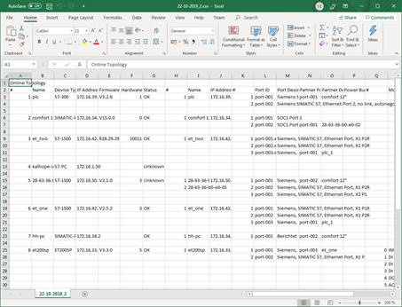
如果网络规模足够大，则在“图形视图”(Graphical View) 内，网络拓扑表示将分布在 PDF 的多个页面上。
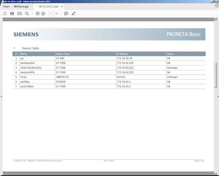
根据当前模式，只有部分导出选项可用：
|
|
在线 |
离线 |
比较 |
组态 |
|
XML |
✔ |
x |
x |
x |
|
图形视图 |
✔ |
✔ |
✔ |
x |
|
设备表 (CSV) |
✔ |
✔ |
✔ |
x |
|
图形视图 + 设备表 (PDF) |
✔ |
✔ |
x |
x |
在功能栏右侧有一个输入框 (1)，可用于搜索特定设备。输入的搜索词将与所有信息字段（如设备名称、类型、网络参数等）相匹配。
搜索内容不区分大小写，且不允许使用通配符或正则表达式。
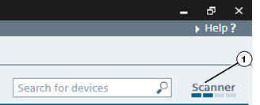
与搜索词相匹配的内容将在“图形视图”(Graphical View) 和设备表 中以橙色阴影 (1) 突出显示。
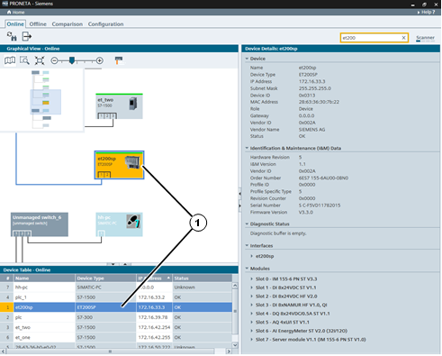
在功能栏最右侧有一个扫描装置状态指示器 (1)，可显示当前网络扫描周期的状态。
每个网络扫描周期分为四个阶段，由扫描装置状态指示器分段表示。指示器经过所有四个分段后，即完成一次网络扫描。
右键单击状态指示器，将显示一个快捷菜单，其中包含一项：
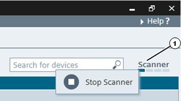
|
图标 |
名称 |
功能 |
|
|
启动扫描装置 |
切换网络扫描：如果正在运行网络扫描，则会停止，反之亦然。 |
|
|
停止扫描装置 |
扫描装置停止时，不会产生网络负载，也不会获取拓扑更改。在 常规设置 对话框中，可控制 PRONETA Basic 在扫描装置启动时对网络仅进行一次扫描还是连续扫描。
“图形视图”(Graphical View) 是 PROFINET 网络的一种图形显示形式，其中显示该网络设备以及这些设备在当前网络扫描期间或之前存储的参考网络中的互连。“图形视图”(Graphical View) 位于 PRONETA Basic 窗口的左上角。
在空白区域内，单击然后拖动将移动可见网段。将鼠标指针悬停在设备上时，手型控键会更改为箭头，并显示“设备工具提示”(Device Tooltip)，其中包含设备的基本信息。
设备显示
设备状态由不同颜色的设备符号和边框表示：
工具栏
在视图顶部有一个带有各种功能图标的工具栏：
|
图标 |
名称 |
功能 |
|
|
显示拓扑的概览 |
在“在线视图”(Online View) 中切换拓扑概况。（参见 拓扑概况) |
|
|
缩放选择 |
可使用此工具在“图形视图”(Graphical View) 中绘制一个矩形。释放鼠标按钮后，视图便会缩放以显示矩形区域。 |
|
|
根据画面大小进行缩放n |
将视图缩放到所有网络设备都适合显示在视图内的大小。 |
|
|
缩放条 |
可向左或向右拖动手柄或单击“-”或“+”放大或缩小网络。（还可以通过将鼠标置于视图上并使用鼠标滚轮来放大和缩小图形视图。） |
|
|
显示物理连接类型 |
不同的颜色表示不同的传输介质。（请参见设备连接类型) |
“拓扑概况”(Topology Overview) 是“图形视图”(Graphical View) 左上部分中的视图，有助于检查大型网络。无论为“在线视图”选择的缩放比例如何，其中都会显示在当前网络扫描期间找到的所有设备的示意图。
当前在“在线视图”(Online View) 中可见的网段由浅蓝色半透明的矩形指示。将该矩形拖过“拓扑概况”(Topology Overview) 视图，以在“在线视图”(Online View) 中移动可见网段。
拖动“拓扑概况”(Topology Overview) 的右边框或底部边框可更改视图的大小。
如果选中了工具栏中的“显示物理连接类型”(Show Physical Connection Types) 选项，则按以下颜色对设备间的连接进行编码：
黑色：铜以太网接线
橙色：光纤连接
两条平行线表示环形拓扑。
对于显示未与其它设备连接的设备，无法收集所需信息。
将鼠标悬停在设备上时会显示工具提示，其中包含：
设备名称
设备类型
IP 地址
固件版本（如适用）
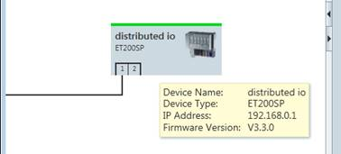
将鼠标悬停在设备端口上会显示：
接口名称
IP 地址
端口 ID（仅用于有线连接）
相邻设备名称
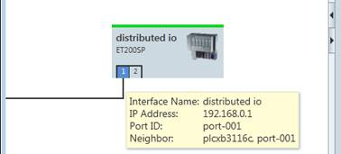
右键单击“图形视图”(Graphical View) 或相应“设备表”(Device Table) 中的任意设备，可调出具有各种功能的快捷菜单。
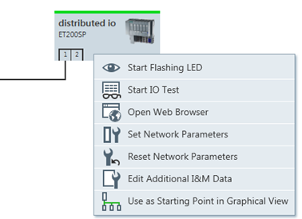
并非所有的条目都适用于具有实际条目的所有设备，具体取决于设备的状态。
|
图标 |
名称 |
功能 |
|
|
使 LED 闪烁 |
将物理设备上的 LED 设置为闪烁以便于识别。 |
|
|
启动 IO 测试 |
立即对所选设备启用 IO 测试任务。 |
|
|
打开 Web 浏览器 |
打开 PC 的网络浏览器，并建立到设备的 Web 服务器的连接。 |
|
|
开始（停止）闪烁名称/IP 地址重复的 LED |
如“使 LED 闪烁”(Flash LED)，但使与所选设备共享相同名称和/或 IP 地址的所有设备的 LED 闪烁。 |
|
设置网络参数 |
单击此图标将打开一个弹出窗口，用户可在其中设置所选设备的各种网络参数。 有关详细信息，请参见 设置网络参数。 |
|
|
|
复位网络参数 |
恢复设备 IP 地址和设备名称的出厂设置。 如果从“设备表”(Device Table) 中选择命令，则可同时重置多个选定的设备。 |
|
编辑其它 I&M 数据 |
单击此图标将打开一个弹出窗口，用户可在其中输入有关设备标识和维护 (“I&M”) 的数据（如安装位置和日期）。 |
|
|
|
用作图形视图的起点 |
使用左上角的选定设备重绘图形视图。 |
此表列出了在当前网络扫描（仅在线模式）期间或存储的参考网络中发现的设备。该表显示在 PRONETA Basic 窗口的“图形视图”(Graphical View) 下方。
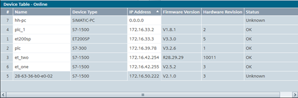
此表可显示大量不同的设备数据。右键单击表头字段的任意位置将打开一个菜单，可在其中选择要显示的信息字段。
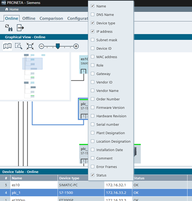
表格单元周围的橙色边框表示设备名称或 IP 地址重复。
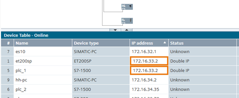
可在表格中的白色单元格中输入信息。当单元格不再被选中后，新值将立即写入相应的设备。（这是使用快捷菜单条目“设置网络参数”的另一种方法）
左键单击列标题将根据此列中的数据按升序对表格进行排序，再次单击会转换为降序排列。列标题中的小三角形符号“▲”或“▼”表示排序标准。
使用鼠标拖动列表题会相应地重新排列表格列。
右键单击任意表格条目都会调出当前设备的快捷菜单。
在 PRONETA Basic 窗口的右侧，显示详细信息视图。
该视图显示之前在 设备表 中选择的设备的其它设备信息。
单击相应分支的三角形符号可打开和折叠设备属性树的分支。
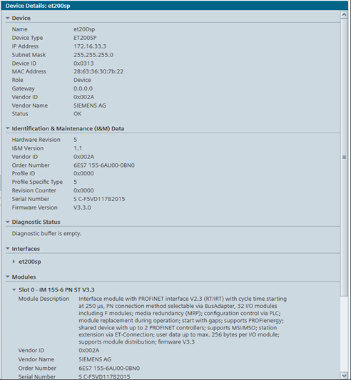
对于连接到 PROFINET 设备并提供资产管理记录 (AMR) 的非 PROFINET 设备，AMR 中的数据也会显示在“设备详细信息”(Device Details) 中。
允许在此弹出窗口中立即输入各设备的以下参数：
设备名称
静态或 DHCP IP 组态
以及（如适用）：
IP 地址
网络掩码
网关路由器地址
选中“始终应用设置”(Apply settings permanently) 复选框，可确保新参数在设备断电时保持不变。
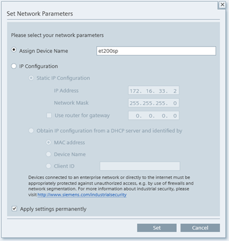